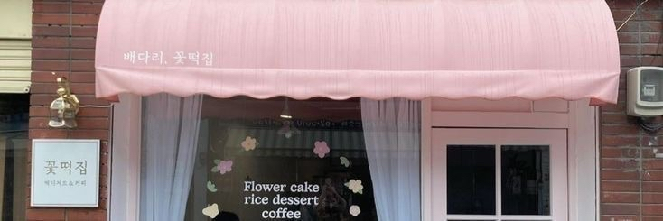
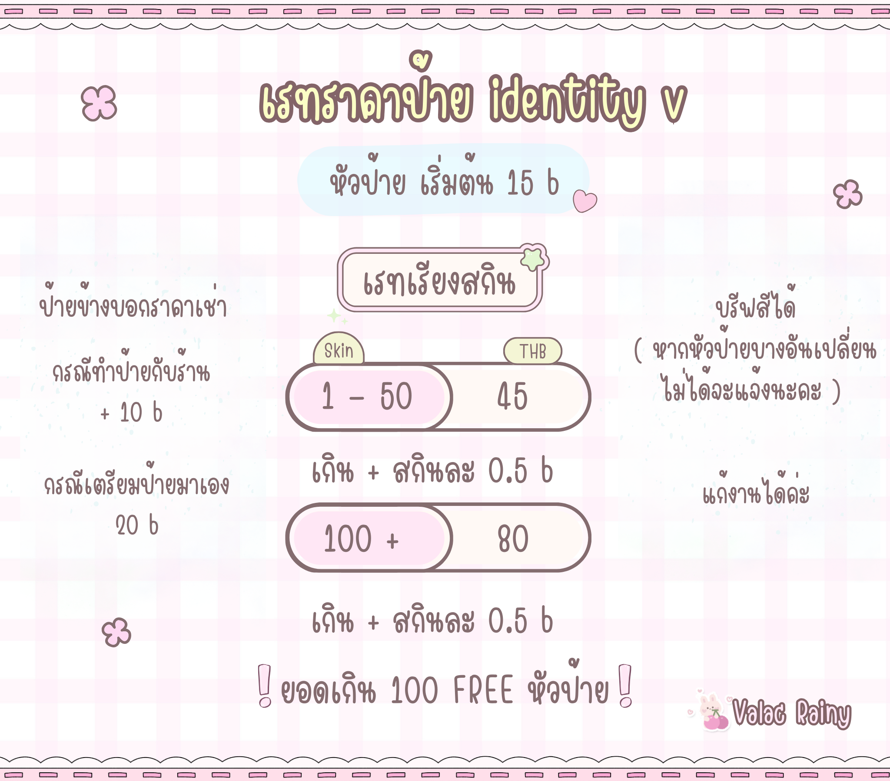
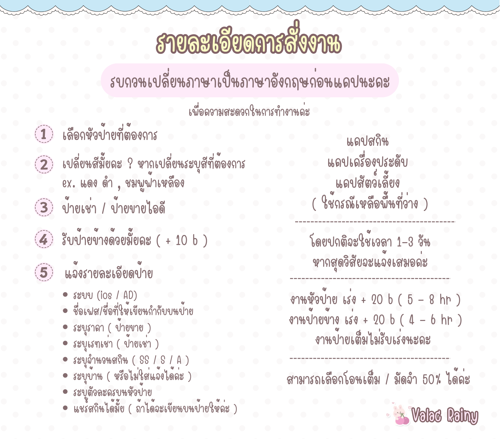

Valac Rainy
รับทำป้าย , ปล่อยเช่ารหัส และอื่นๆ
สนใจบริการทักแชทสอบถามได้เลยนะคะ
เรทราคาป้าย Identity V

- 1 - 50 สกิน : 45 THB
(เกิน + สกินละ 0.5 b) - 100 + สกิน : 80 THB
(เกิน + สกินละ 0.5 b)
รายละเอียดการสั่งงาน

ขั้นตอนการสั่ง:
-
1เลือกหัวป้ายที่ต้องการ
-
2เปลี่ยนสีไหมคะ ? หากเปลี่ยนระบุสีที่ต้องการ
ex. แดง ดำ , ชมพูฟ้าเหลือง -
3ป้ายเช่า / ป้ายขายไอดี
-
4รับป้ายข้างด้วยมั้ยคะ ( + 10 b )
-
5แจ้งรายละเอียดป้าย:
- • ระบบ (ios / AD)
- • ชื่อเฟซ/ชื่อที่ให้เขียนกำกับบนป้าย
- • ระบุราคา ( ป้ายขาย )
- • ระบุเรทเช่า ( ป้ายเช่า )
- • ระบุจำนวนสกิน ( SS / S / A )
- • ระบุบ้าน ( หรือไม่ใส่แจ้งได้ค่ะ )
- • ระบุตัวละครบนหัวป้าย
- • แชร์สกินได้มั้ย ( ถ้าได้จะเขียนบนป้ายให้ค่ะ )
โดยปกติจะใช้เวลา 1-3 วัน หากสุดวิสัยจะแจ้งเสมอค่ะ
- * งานหัวป้าย เร่ง + 20 b ( 5 - 8 hr )
- * งานป้ายข้าง เร่ง + 20 b ( 4 - 6 hr )
* งานป้ายเต็มไม่รับเร่งนะคะ
สามารถเลือกโอนเต็ม / มัดจำ 50% ได้ค่ะ
ข้อสงสัย/FAQ
เนื้อหา: ทุกหัวป้ายสามารถทำเป็นป้ายไอเดนได้ทั้งหมดนะคะ
รายละเอียด: เนื่องจากบล็อกส่วนมากแม่ค้านำมาจากกลุ่ม rov จะคงบล็อกเดิมไว้เปลี่ยนเพียงรายละเอียดต่างๆ ให้สอดคล้องกับไอเดนเท่านั้น ดังนั้นบางส่วนไม่สามารถแก้ไขเกินขอบเขตบล็อกเดิมได้ โดยจะแจ้งไว้ก่อนนะคะ
ตัวอย่าง: โดยป้ายที่เคยทำแล้ว จะนำตัวอย่างที่เป็นไอเดนไปใส่ให้นะคะ